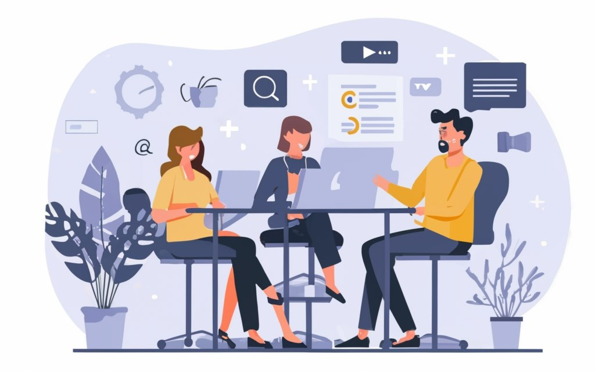

Conceito de Ética
A ética na tecnologia é um tema de grande importância atualmente, e se torna ainda mais relevante quando se trata de programação. Os programadores têm a responsabilidade de criar sistemas que sejam eficientes, seguros e que correspondam aos princípios éticos que garantam o bem-estar da sociedade. A ética na tecnologia pode ser aplicada de diversas maneiras no dia a dia do programador, continue a leitura para descobrir!
Ética e Responsabilidade Social:
Outro aspecto ético importante é a responsabilidade social. Primeiramente, é importante que os programadores desenvolvam sistemas e produtos que contribuam para a melhoria da qualidade de vida das pessoas e da sociedade como um todo. A criação de aplicativos que facilitem o acesso a informações importantes, a construção de sistemas que melhorem a segurança e a saúde dos usuários e a criação de tecnologias que ajudem a preservar o meio ambiente. Outra forma pela qual os programadores podem contribuir para a responsabilidade social é através da disseminação de conhecimentos e da educação em tecnologia. Isso inclui a criação de materiais didáticos e a participação em projetos que visem ensinar as pessoas sobre tecnologia e suas implicações sociais, ambientais e econômicas. A responsabilidade social se encaixa na ética de um programador através do comprometimento com a criação de tecnologias que contribuam para a melhoria da qualidade de vida das pessoas e da sociedade, da adoção de práticas éticas e justas em suas atividades e da disseminação de conhecimentos e educação em tecnologia. Os programadores têm um papel importante a desempenhar na construção de uma sociedade mais justa, igualitária e sustentável através da tecnologia.
